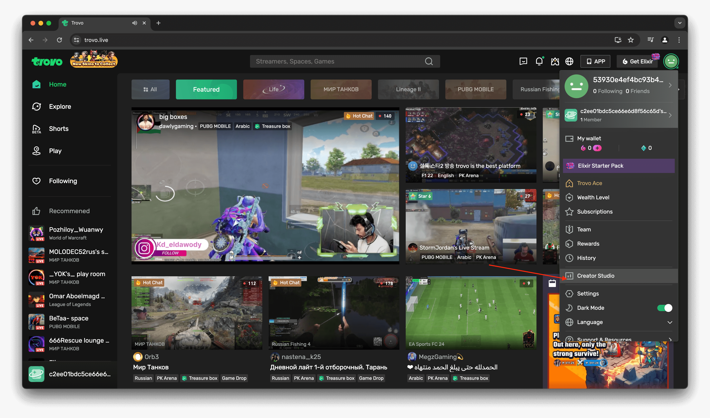
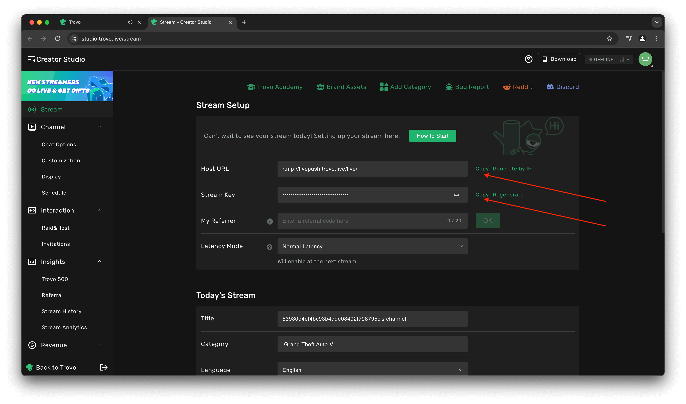

Open the Trovo app and tap on "Creator Studio" from the menu.
How to Stream Live on Trovo with Screen Recorder
Welcome to Screen Recorder, Let’s get started with a step-by-step guide to unlock your streaming potential.
Step 1: Open Trovo app and tap on Creator Studio from the menu

Step 2: Copy Host URL and Stream Key
In the Creator Studio, copy the Host URL and Stream Key. Be sure to enter your streaming details in "Today's Stream".

Step 3: Paste Host URL and Stream Key in our app
Paste the Host URL and Stream Key into the Screen Recorder app and you’re ready to stream!